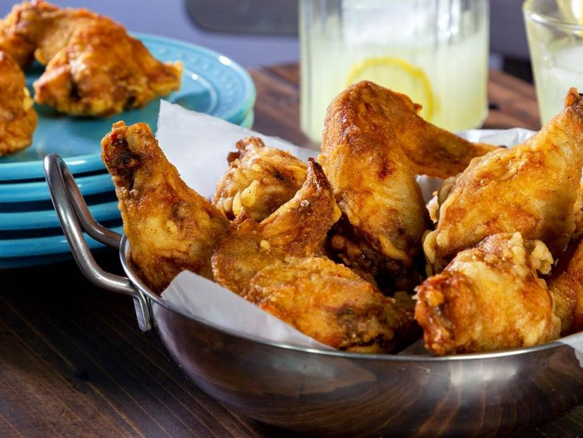

Chicken Wings

Ingredients
Cure
- 4 teaspoons onion powder
- 1 1/2 tablespoons kosher salt
- 2 teaspoons mustard powder
- 4 whole chicken wings, drumettes and flats attached
Batter
- 1/2 cups cornstarch
- 3/4 cup all-purpose flour
- 1 teaspoon kosher salt
- 1 3/4 cups cold water, plus more as needed
- 1 quart canola oil, plus more as needed, depending on size of pot
Steps
- Cure chicken: In a bowl, add onion powder, salt, and mustard powder,
and combine until well blended. Add the chicken wings to a large bowl,
sprinkle with about half the curing mixture, and get in there with
your hands to coat each piece well. (Note: This is enough cure for 8
whole wings or 1 whole chicken, so you won’t need to use all of it.
Save it in an airtight container for next time!) Place the coated
wings in a single layer on a baking sheet lined with parchment paper,
keeping the skin intact; lightly cover with parchment paper or plastic
wrap. Refrigerate for at least 4 hours or up to overnight.
- Bring the cured chicken to room temperature. (You don’t want to fry
ice-cold chicken, because it won’t cook all the way through, and it
will chill the frying oil.) Meanwhile, make the batter: In a large
bowl, add the cornstarch, flour, and salt. Slowly pour in the cold
water, whisking continuously, until the mixture is smooth and the
consistency of thin pancake batter. Add more water as needed to thin
the batter.
- Heat oil: Clip a candy or deep fry thermometer onto a large, heavy pot.
Add enough canola oil to fully submerge the wings—about halfway up the
side of the pot. (Oil expands as it heats, so don’t overfill the pot.)
Heat the oil over low heat until it reaches at least 300 degrees F.
(It’s fine if the oil temperature goes up as high as 350 degrees F,
because it will drop once the chicken is added.) Coat chicken:
Separate each wing into two pieces by slicing through the joint between
the drumette and the wing. When the oil is hot, add all the chicken
into the batter and fully coat each piece.
- First fry: Use tongs to pick up a wing and allow some of the excess
batter to drip off. Gently swirl the tip of the wing in the hot oil
to set the crust; this will prevent the chicken from sticking to the
bottom of the pot. Then ease the rest of the wing into the oil. Repeat
with all the wings. Fry for 10 minutes. Use a slotted spoon or spider
strainer to make sure the wings don’t stick together or to the bottom
of the pot. If they do stick, gently separate them with the spoon; try
not to tear the delicate crust!
- After 10 minutes, use the slotted spoon to transfer the wings to drain
on a wire rack or paper towels on a baking sheet. The chicken will not
be fully cooked—there’s a second fry. Let the chicken rest, 15–20
minutes. Meanwhile, reheat the oil to just above 350 degrees F
(temperature will drop slightly when the chicken is added). Use the
slotted spoon to remove and discard stray bits of batter from the oil.
(Note: The chicken can be made to this point up to 1 day ahead and
refrigerated; bring it back to room temperature before the second fry.)
- Second fry: When the oil is hot, use the slotted spoon to gently ease
the wings back in. Fry for 4 minutes, or until golden brown and crispy.
- Use the slotted spoon to transfer the chicken pieces to a clean wire
rack set over a paper towel-lined baking sheet. Let cool for 5-10 minutes,
then serve. (Note: Frying oil can be reused several times for frying chicken.
Cool the oil completely, then pour through a fine-mesh strainer into a
clean jar. Cover and store in the refrigerator for up to two weeks.)